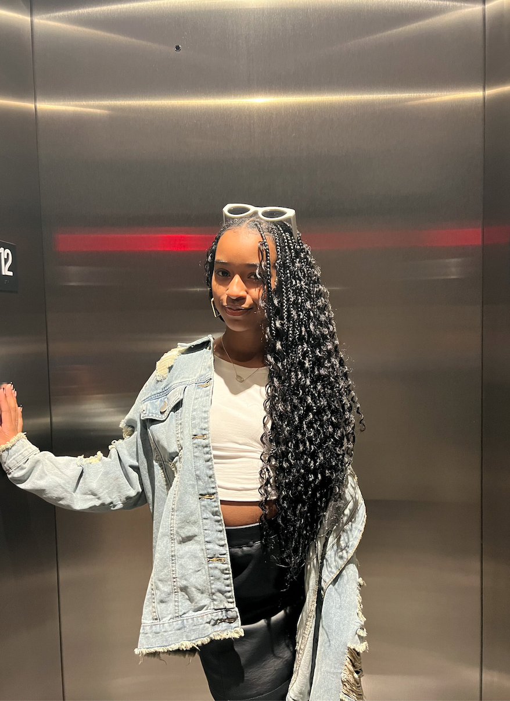

About Sydney
Anyone who knows me knows that I am very confident and fearless. I make strong connections and would like to be able to connect with you too. Hi, I'm Sydney. I am currently 15 years old and live in Charlotte, North Carolina. I am a sophomore at Cox Mill High School. I am an active member of the Cox Mill High School varsity cheer team, varsity competition game day team, and the varsity competition traditional team. I am also an active member of Jack & Jill of America, HOSA, Beta Club, and Black Student Union. I have one sister who is a sophomore biology major at Howard University. I hope to also attend Howard University. I am very passionate about cheerleading and hope to continue through college. I plan on either becoming a malpractice lawyer or a concussion specialist.
Favorite Quote
"Always show up as your true authentic self." - Mechael Lewis
Family
My family is a very close and tight nit. My family consists of me, my mom, my dad, my sister, and my dog. My father's name is Chance Lewis is a professor and research center director at UNC Charlotte. My mother's name is Mechael Lewis and is a Women's Health Nurse Practioner. My sister Myra Lewis is a sophomore at Howard University and aspires to become a dermatologist. My dog Brees is a tibetan spaniel,and he is 5 years old.